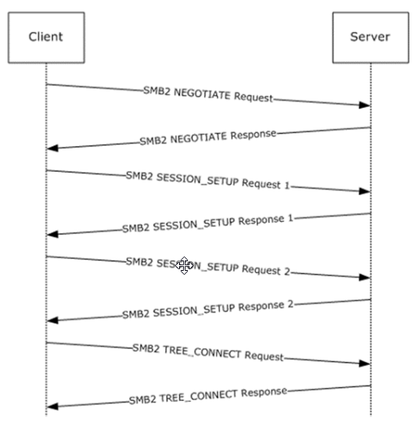
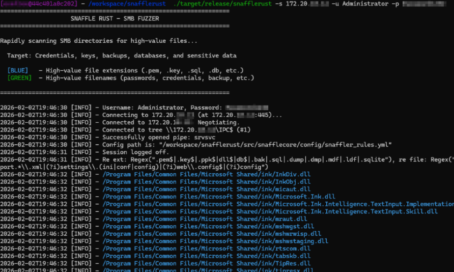

SnaffleRust: Herramienta de Enumeración SMB
Resumen
- Introducción
- Server Message Block (SMB)
- Presentación de la arquitectura de la herramienta
- Demostración
I. Introducción
Este artículo está publicado en español y va a tratar de una nueva herramienta desarrollada en Rust que padece de un problema recurrente que las otras herramientas de tipo Snaffler en Python que no pueden conectarse a los shares cuando el puerto NetBios (139) no está abierto.
La herramienta está disponible con este enlace: Eyilink/snafflerust
II. Server Message Block (SMB)
Para comenzar, voy a presentar el protocolo SMB que es frecuentemente utilizado en entornos Active Directory para compartir archivos y comunicar principalmente entre máquinas Windows.
Históricamente, el protocolo se usó sobre NetBIOS usando el puerto 139, no obstante hoy en día puede usarse directamente en TCP con el puerto 445. Por lo tanto, la próxima sección tratará de NetBios.
NetBIOS
Network Basic Input Output System apareció en 1983 y se sitúa en la capa 5 del modelo OSI. Este protocolo permite a varias aplicaciones de la misma red comunicarse entre sí, sin embargo este protocolo no podía aplicarse sobre varias redes. Así que en 1987, el protocolo NBT fue creado para adaptar el protocolo NetBIOS sobre TCP y UDP.
Está dividido en tres servicios. El servicio de nombres NetBIOS usado para resolver nombres NetBIOS con el puerto 137 UDP y dos servicios NetBIOS Datagrama (puerto 138 UDP) y Sesión (puerto 139 TCP) para transportar mensajes SMB.
El servicio de nombres NetBIOS resuelve nombres a dirección IP.
El problema de ciertas herramientas es que se conectan usando el protocolo NetBIOS y a menudo este servicio no está disponible.
Aun así, existe otra forma de conectarse: SMB sobre TCP/IP.
SMB sobre TCP
La Share IPC$ es una share especial de Windows que permite la comunicación remota entre procesos vía named pipes.
La comunicación entre procesos permite que los procesos puedan interactuar y compartir datos dentro del sistema operativo.
Named pipes es un tipo de comunicación unidireccional que es FIFO (First In First Out) significando que el primer elemento que entra en la cola es el primero que va a ser procesado. La comunicación unidireccional significa que ambos no pueden emitir datos al mismo tiempo, o sea que hay que uno escucha cuando el otro emite.
Puede conectarse a una share usando este método con el puerto 445 TCP de un servidor SMB. Usar este puerto padece del problema recurrente de las herramientas Python que suelen conectarse al puerto 139.
La autenticación a la share se hace gracias al protocolo NTLM que está encapsulado en los mensajes SMB. El NTLM se usó durante el establecimiento de la sesión SMB.
La instanciación de una sesión SMB se desarrolla así:

Los detalles de cada SMB mensajes pueden encontrarse aquí: [MS-SMB2]: Connecting to a Share by Using an SMB2 Negotiate | Microsoft Learn
Varios mensajes SMB existen, pero sólo nos enfocaremos en los siguientes:
- NEGOTIATE: Primer mensaje enviado cuando una sesión SMB está instanciada, este mensaje permite acordar ambas extremidades en la versión SMB usada (SMB1, SMB2, SMB3).
- SESSION_SETUP: Permite autenticar la sesión SMB mediante NTLM o Kerberos. Este mensaje devuelve un identificador de sesión (Session ID).
- TREE_CONNECT: Permite conectarse a una share con una Session ID especificando el UNC (Universal Naming Convention) de la share. Por ejemplo, \\host\nombre de la share. Este mensaje devuelve un identificador tree (Tree ID).
Existen tres versiones de SMB. En la siguiente tabla se comparan los tres protocolos:
| SMBv1 (CIFS) | SMBv2 | SMBv3 | |
|---|---|---|---|
| Año de aparición | 1983 | 2006 | 2012-2016 |
| Seguridad |
- Autenticación NTLMv1 / LM - No cifrado |
- Autenticación NTLMv2 y Kerberos - Firma de los mensajes posible (SMB Signing) - No cifrado nativo |
- Autenticación NTLMv2 y Kerberos fortalecido (blindaje Kerberos) - Cifrado nativo - Firma de los mensajes obligatoria |
El protocolo SMB evolucionó principalmente por problemas de seguridad y optimización.
Es porque conectarse a la share IPC$ fuerza la creación de una sesión SMB autenticada y un contexto de tree por defecto, que es reutilizado para llamar al API del servidor SMB y permite enumerar las shares presentes en el servidor.
Además, IPC$ existe en todos los servidores SMB Windows. Los ACL por defecto son:
- Authenticated Users: Autorizados.
- Administrators: Acceso completo.
- Anonymous: Rechazados.
Así que, si disponemos de un usuario que puede autenticarse en el servidor Windows, podemos autenticarnos usando la share IPC$ en el servidor SMB subyacente.
Más a propósito de la encapsulación de NTLM en SMB y la firma SMB
Encapsulación de NTLM en SMB:
La Security Support Provider (SSP) de NTLM está encapsulada en todos los mensajes SMB Session Setup. Eso es posible porque Windows usa Security Support Provider Interface que añade una capa de abstracción y que permite a muchos protocolos distintos (RPC, SMB, HTTP, etc.) de usar métodos de autenticación sin tener que implementar los ellos mismos. Esta interfaz permite llamar la SSP NTLM que ella misma llama a DCOM (Distributed Component Object Model) que permite llamar a funciones locales desde un sistema remota, es un mecanismo de comunicación inter-procesos remoto (IPC).
Una actividad para entender este concepto mejor es usar Wireshark y interceptar y disectar las solicitudes.
Para informaciones adicionales, siguen las referencias siguientes:
SMB Signing:
La firma SMB sirve para garantizar que los mensajes enviados entre cliente y servidor no sean modificados ni manipulados durante la transmisión, asegurando su integridad y autenticidad.
La firma SMB implementa varios modos:
- Desactivada (disabled): el servidor SMB no puede firmar los mensajes.
- Activada (enabled): el servidor SMB puede firmar los mensajes SMB pero se adapta al interlocutor, si él puede también firmar los mensajes pues van a estar firmados, si no puede los mensajes no van a estar firmados. Así que, en este caso la firma SMB es opcional.
- Requerida (required): Mensajes SMB deben estar firmados, si no están firmados la conexión falla.
Este tabla recapitula cuando la firma SMB se aplica:
| Cliente | Servidor | Resultado |
|---|---|---|
| enabled | disabled | no hay firma SMB |
| enabled | enabled | opcional pero normalmente se usa la firma SMB |
| required | enabled | hay firma SMB |
| required | disabled | la conexión falla |
De hecho, los protocolos SMBv2 (versión 2) y SMBv3 (versión 3) solo pueden usar las valores required (requerida) o enabled (activada).
Aunque el protocolo SMBv1 (en versión 1) puede usar los tres (enabled, disabled y required).
La tabla que aparece abajo presenta las evoluciones del protocolo SMB que era al principio el protocolo CIFS:
| Versión SMB | Soportada | Funcionalidades |
|---|---|---|
| CIFS | Windows NT 4.0 | Comunicación con la interfaz NetBios |
| SMB 1.0 | Windows 2000 | Conexión directa con TCP |
| SMB 2.0 | Windows Vista, Windows Server 2008 | Aumento de desempeño, mejoracion de la firma SMB, funcionalidad de caching |
| SMB 2.1 | Windows 7, Windows Server 2008 R2 | Mecanismo de bloqueo |
| SMB 3.0 | Windows 8, Windows Server 2012 | Conexiones multicanal, cifrado de extremo a extremo, acceso a almacenamiento remoto |
| SMB 3.0.2 | Windows 8.1, Windows Server 2012 R2 | Mejoras incrementales |
| SMB 3.1.1 | Windows 10, Windows Server 2016 y posteriores | Verificaciones de integridad, cifrado AES-128 |
| SMB 3.1.1 potenciado | Windows 11, Windows Server 2022 y posteriores | Mejoras de seguridad y desempeño, cifrado AES-256 opcional, persistencia mejorada de handles, multicanal avanzado |
Esto concluye la parte teórica sobre SMB en este artículo.
III. Presentación de la Arquitectura de la Herramienta
La herramienta SnaffleRust está hecha en Rust, porque permite beneficiarse del desempeño de este lenguaje.
La herramienta está compuesta por dos librerías: pavao - Rust y smb - Rust. Estas librerías se llaman crate cuando hablamos de Rust.
El crate SMB sirve para listar las shares SMB que están disponibles en el servidor SMB usando la share IPC$ y el crate Pavao sirve para iniciar una nueva sesión con una share e iterar sobre su contenido para detectar los archivos que tienen un alto valor.
La herramienta contiene reglas para detectar archivos que uno quiere encontrar. Estas reglas usan a Regex para identificar los archivos especiales. Estas reglas pueden personalizarse.
La herramienta usa varios threads para optimizar el desempeño en términos de tiempo.
Los archivos que son detectados no son guardados en la memoria, así que son mostrados directamente en el terminal.
IV. Cross Compilación
La herramienta puede compilarse en su propia máquina pero primero es necesario de instalar el paquete de sistema siguiente:
sudo apt-get install libsmbclient-dev samba-devCuando este paquete está instalado, puede lanzar el comando siguiente:
cargo buildSi quieres compilar rumbo a otro sistema operativo, puede elegir un sistema objetivo con este comando:
rustup target add <sistema operativo objetivo>Una lista exhaustiva puede encontrarse con este enlace: Platform Support - The rustc book.
Después, si quiere compilar con objetivo tu otro sistema operativo, puede usar el comando siguiente:
cargo build --target <sistema operativo objetivo>Así se desarrolla una compilación cruzada, pero mantiene en mente que compilar directamente en el sistema objetivo es mejor porque dispone de las librerías del sistema.
V. Demostración
La siguiente ilustración debajo muestra SnaffleRust empleado en un servidor de CTF:
